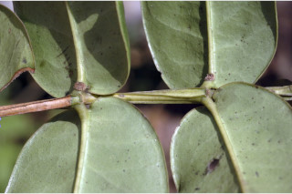
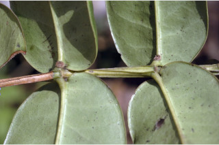
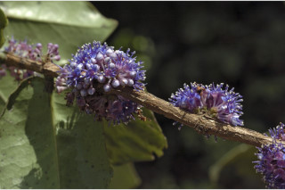
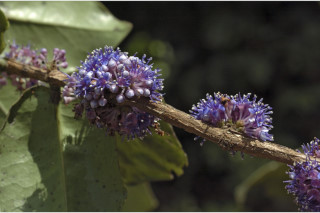

Shrubs ca. 4 m tall.
ಅಂದಾಜು 4 ಮೀ. ಎತ್ತರದ ಪೊದೆಗಳು.
ഏതാണ്ട് 4 മീറ്റര് ഉയരമുളള കുറ്റിച്ചെടികള്.
குத்துசெடி 4 மீ. வரை வளரக்கூடியது.
Branchlets narrowly 4-angled and winged, glabrous.
ಕಿರುಕೊಂಬೆಗಳು ಸಂಕುಚಿ 4-ಕೋನಗಳನ್ನು ಹೊಂದಿದ್ದು ರೆಕ್ಕೆಗಳ ಸಮೇತವಿರುತ್ತವೆ ಮತ್ತು ರೋಮರಹಿತವಾಗಿರುತ್ತವೆ.
അരോമിലമായ, നേര്ത്ത ചതുഷ്ക്കോണുളള ചിറകുളള ഉപശാഖകള്.
சிறிய நுனிக்கிளைகள் குறுக்குவெட்டுத் தோற்றத்தில் குறுகிய நான்கு கோணங்களுடையது மற்றும் சிறகு போன்ற வளரியுடையவை, உரோமங்களற்றது.
Leaves simple, opposite, decussate; petiole subsessile (0.2 cm long), glabrous; lamina 6.5-11 x 2.5-5.7 cm, ovate to ovate-oblong, apex acute with blunt tip, base rounded to subcordate, margin entire, coriaceous, midrib canaliculate above; secondary_nerves obscure; tertiary_nerves obscure.
ಎಲೆಗಳು ಸರಳವಾಗಿದ್ದು, ಕತ್ತರಿಯಾಕಾರದ ಅಭಿಮುಖ ಜೋಡನಾ ವ್ಯವಸ್ಥೆಯ –ಲ್ಲಿರುತ್ತವೆ ಮತ್ತು ರೋಮರಹಿತವಾದ ಉಪತೊಟ್ಟುಗಳನ್ನು ಹೊಂದಿರುತ್ತವೆ (0.2 ಸೆಂ.ಮೀ. ಉದ್ದ); ಪತ್ರಗಳು 6.5-11 X 2.5 -5.7 ಸೆಂ.ಮೀ. ಗಾತ್ರ ಹೊಂದಿದ್ದು ಅಂಡದಿಂದ ಅಂಡ-ಅಂಡವೃತ್ತವರೆಗಿನ ಆಕಾರದಲ್ಲಿದ್ದು ಮೊಂಡಾಗ್ರವುಳ್ಳ ಚೂಪಾದ ತುದಿ ಮತ್ತು ದುಂಡಾದದುದರಿಂದ ಉಪಹೃದಯದವರೆಗಿನ ಆಕಾರವುಳ್ಳ ಬುಡವನ್ನು ಹೊಂದಿರುತ್ತವೆ; ಅಂಚು ನಯವಾಗಿರುತ್ತದೆ; ಪತ್ರಗಳು ತೊಗಲನ್ನೋಲುವ ಮಾದರಿಯಲ್ಲಿರುತ್ತವೆ; ಮಧ್ಯನಾಳ ಕಾಲುವೆ ಗೆರೆ ಸಮೇತವಿರುತ್ತದೆ; ಎರಡನೇ ಮತ್ತು ಮೂರನೇ ದರ್ಜೆಯ ನಾಳಗಳು ಅಸ್ಪಷ್ಟ.
ലഘുവായ ഇലകള്, സമ്മുഖ, ഡെക്കുസേറ്റ് ക്രമത്തിലാണ്; അരോമിലമായ ഉപഅവൃന്ത (0.2 സെ.മീ നീളം) ഇലഞെട്ട്; പത്രഫലകത്തിന് 6.5 സെ.മീ മുതല് 11 സെ.മീ വരെ നീളവും 2.5 സെ.മീ മുതല് 5.7 സെ.മീ വരെ വീതിയും, ആകൃതി അണ്ഡാകാരംതൊട്ട് അണ്ഡാകാര-ആയതാകാരം വരെയാകാം, മുനപ്പില്ലാത്ത നിശിതാഗ്രമാണ്, പത്രാധാരം വൃത്താകാരം തൊട്ട് ഉപഹൃദയാകാരം വരെയാകാം, അരികുകള് അവിഭജിതമാണ്, ചര്മ്മില പ്രകൃതം, മുഖ്യസിര മുകളില് ചാലുളളതാണ്; ദ്വിതീയ ഞരമ്പുകള് അപ്രസക്തമാണ്; ത്രിതീയ ഞരമ്പുകള് അപ്രസക്തമാണ്.
இலைகள் தனித்தவை, எதிரடுக்கமானவை, குறுக்குமறுக்குமானவை; இலைக்காம்பு மிகச்சிறியது (0.2 செ.மீ. நீளமானது), உரோமங்களற்றது; இலை அலகு 6.5-11 X 2.5-5.7 செ.மீ., முட்டை முதல் முட்டை-நீள்சதுர வடிவானது, அலகின் நுனி கூரியது மற்றும் மழுங்கியவை, அலகின் தளம் வட்டமானது முதல் சிறிது இதய (கார்டேட்) வடிவானது, அலகின் விளிம்பு முழுமையானது, கோரியேசியஸ், மையநரம்பு அலகின் பரப்பைவிட பள்ளமானது; இரண்டாம் நிலை நரம்புகள் கண்களுக்குப் புலப்படாது; மூன்றாம் நிலை நரம்புகள் கண்களுக்குப் புலப்படாது.
Flowers blue, fascicled, singly or in very short pedunculate cymes, generally on lateral tubercles.
ಹೂಗಳೂ ನೀಲಿ ಬಣ್ಣದವುಗಳಾಗಿದ್ದು ಗುಚ್ಛಗಳಲ್ಲಿದ್ದು ಒಂಟಿಯಾಗಿ ಅಥವಾ ತೀರಾ ಚಿಕ್ಕದಾದ ವೃಂತವುಳ್ಳ ಸಾಮಾನ್ಯವಾಗಿ ಪಾರ್ಶ್ವದ ಮೇಲಿನ ಗುಬುಟುಗಳ ಮೇಲಿನ ಮಧ್ಯಾರಂಭಿ ಪುಷ್ಪಮಂಜರಿಗಳಲ್ಲಿರುತ್ತವೆ.
നീലപ്പൂക്കള്, കൂട്ടമായോ ഒറ്റക്കായോ, വളരെ കുറിയ തണ്ടുളള സൈമുകളില്, സാധാരണയായി പാര്ശ്വസ്ഥ മുഴപ്പുകളില് ഉണ്ടാകുന്നു.
மலர்கள் நீல நிறமானவை, கூட்டமாக அமைந்தவை, தனித்த அல்லது மிகச்சிறிய மஞ்சரி காம்புடைய சைம், பொதுவாக தண்டின் பக்கவாட்டிலுள்ள கழலைகளில் தோன்றுகின்றன.
Berry, globose; seed 1.
ಬೆರ್ರಿಗಳು ಗೋಳಾಕಾರದಲ್ಲಿದ್ದು ಒಂದು ಬೀಜವನ್ನೊಳಗೊಂಡಿರುತ್ತವೆ.
ഒറ്റ വിത്തുളള കായ, ഗോളാകാര ബെറിയാണ്.
முழுச்சதைகனி (பெர்ரி), கோளவடிவானது; விதை ஒன்றுடையது.

 



 
